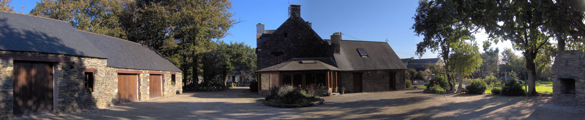

La propiedad
El porche acristalado
Un espacio de comedor y salón de 35 m², equipado, para tomar sus comidas con total autonomía.
Puede preparar y tomar su propia comida: este espacio está equipado con microondas y frigorífico, y podemos facilitarle los cubiertos.
El uso de esta sala como comedor tiene un coste de 3 € por persona y día.

